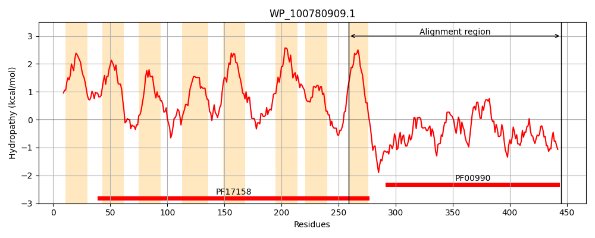
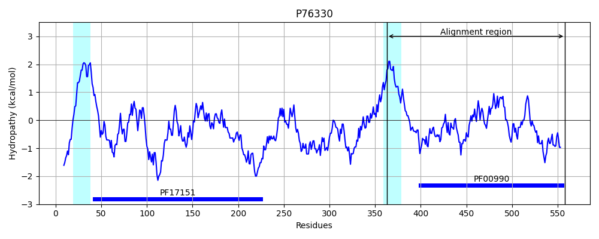

Hit Accession: P76330
Hit TCID: 9.B.34.1.4
Hit Description: gnl|BL_ORD_ID|11459 gnl|TC-DB|P76330|9.B.34.1.4 Probable diguanylate cyclase YedQ OS=Escherichia coli (strain K12) GN=yedQ PE=2 SV=2
Mach Len: 199
e:0.000000
Query TMS Count : 8
Hit TMS Count: 2
TMS-Overlap Score: 0.850000
Predicted Substrates:None
BLAST Alignment:
Score: 294 , Bit scores: 117 bits, E-value: 1.5e-28, Alignment length: 199, Percentage identity: 38
Query: 259 TLCTLFLILVLLVDVFMLYRESNHKYINSYQNSIR-----DPLTRLYNRSFFYDTLNQQLAKV--NPQHPLSVIISDLDHFKRINDNYGHVAGDKVIQFAASVLENHSRADDAAARIGGEEFALLLVNTAEKDALAIAERIRQAVNAEQNHLPERMTI----SMGLYTTRDR-SVSAETCVERADAAMYEAKNSGRNRV 445
TL +LL+ +++ R ++ Y+ Q+S++ D LTRLYNR ++ + LAK+ QHP SVI DLDHFK IND +GH AGD+V+ AA ++ + RA D A R+GGEEF ++L + +A +AERIR +N ++ + + TI S+G+ ++ + E AD +Y AK +GRNRV
Sbjct: 363 TLLWALFTTMLLISWYVIRRMVSNMYV--LQSSLQWQAWHDTLTRLYNRGALFEKA-RPLAKLCQTHQHPFSVIQVDLDHFKAINDRFGHQAGDRVLSHAAGLISSSLRAQDVAGRVGGEEFCVILPGASLTEAAEVAERIRLKLNEKEMLIAKSTTIRISASLGVSSSEETGDYDFEQLQSLADRRLYLAKQAGRNRV 558 | Protein Hydropathy Plots: |
|---|
|  |  |
Pairwise Alignment-Hydropathy Plot:
|
|---|
 |